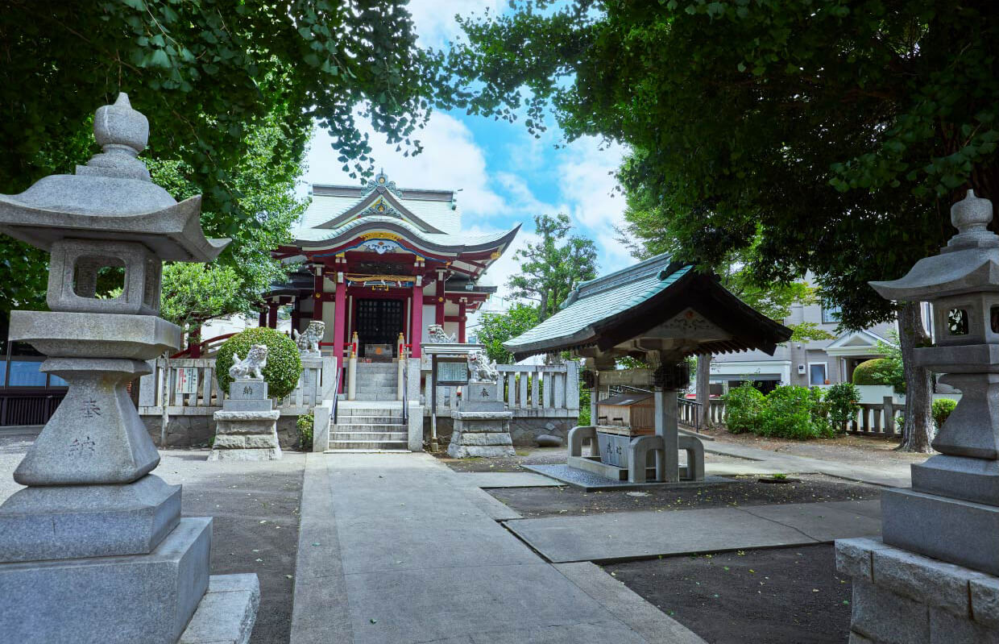

Hello New Spring.
image photo
SAKURA no CITY
桜花舞う美景と。
春の色づきに彩られて。
桜上水の名を映し出す桜の風景に包まれる街。
桜の名所、桜のスポットが点在する桜上水、上北沢の街。「日本大学文理学部の桜」「上北沢の桜並木」は、世田谷区民の投票で選ばれた「せたがや百景」にも選出。地域の方に親しまれています。
image photo
蘆花恒春園の桜（約1,200m／徒歩15分）
緑概念図
将軍池広場の桜（約660m／徒歩9分）

上北沢の桜並木（約730m／徒歩10分）
日本大学文理学部の桜並木（約820m／徒歩11分）
烏山川緑道桜小路の桜（約760m／徒歩10分）
image photo
蘆花恒春園（約1,200m／徒歩15分）
GREEN & WIND
豊潤たる深緑と。
緑量に恵まれ、潤いに溢れた住環境。
豊富な自然が「世田谷の良さ」を映し出す。
世田谷区は東京23区で第2位※1の公園数を誇ります。大小さまざまな公園、のんびりと散歩ができる緑道。樹々や花々の潤いを身近に、四季の移ろいを感じながら暮らすことができます。
蘆花恒春園（約1,200m／徒歩15分）
蘆花恒春園
明治・大正の文豪、徳冨蘆花と愛子夫人が、後半生を過ごした住居と庭、蘆花夫妻の墓地を中心とした旧邸地部分とその周辺を造成した庭園。地域の小学生と協働して育てあげた季節の花々、蘆花が好んで育てた花々が園内を彩ります。ドッグランもあり、天気の良い日は愛犬家が集います。
蘆花恒春園マップ／提供：公益財団法人東京都公園協会
蘆花恒春園（約1,200m／徒歩15分）
image photo
砧公園（約3,660m）
砧公園
約39万㎡超もの広さを誇る都会のオアシスで、桜の名所としても有名です。緑が豊富な西側には散策路やバードサンクチュアリがあり、自然を感じながら遊ぶことができます。園内には、野球場やサッカー場、アスレチック広場のほか、世田谷美術館があり、館内にはフレンチレストランも備えています。
砧公園マップ／提供：公益財団法人東京都公園協会
羽根木公園（約2,850m）
羽根木公園
約650本もの梅の木が植えられている美しい梅林で知られる公園。紅梅白梅が咲く2月下旬ごろには多くの人々で賑わいます。子どもみずから工夫して、気ままに遊ぶことができる「はねぎプレーパーク」も公園内に。自然のなかで水遊びやどろんこ遊びなど、子どもたちが元気に、自由に遊ぶ姿が見られます。
羽根木公園マップ／出典：世田谷区ホームページ
上北沢一丁目公園（約130m／徒歩2分）
桜上水公園（約430m／徒歩6分）
葭根公園（約580m／徒歩8分）
希望丘公園（約850m／徒歩11分）
上北沢の桜並木（約730m／徒歩10分）
SCENERY HERITAGE
残したい風景と。
大切にしたい風景を守り、育て、つくる。
世田谷区の地域風景資産。
世田谷区には、生活や文化が感じられる街並みや、人々が行き交う商店街の賑わいなど、暮らす人々の心に共有され、皆が誇りと愛着を持っている大切な風景がたくさんあります。地域風景資産は大切にしたい身近な風景を守り、育て、つくることを目的とし、世田谷区風景づくり条例に基づき選定されました。
桜上水「江戸城御囲い松」の兄弟松
桜上水「江戸城御囲い松」の兄弟松（約690m／徒歩9分）
- 
八幡山の八幡社
八幡山の八幡社（約440m／徒歩6分）
船橋小径
船橋小径（約1,170m／徒歩15分）
image photo
FUNCTIONAL CITY
充実の舞台と。
利便も刺激も在る街の価値。
世田谷家族の日常を彩る生活舞台。
桜上水に住むこと。それは穏やかな住環境に身を置きながら、駅前の利便性も、街なかで出会う刺激も、すべてを暮らしのフィールドにすること。毎日を彩る商業、スポット、グルメが数多く点在する桜上水の街が、家族の日常を鮮やかに描きます。
スーパーやドラッグストアは選択肢が多いほうがいい。
DAILY SHOPPING
image photo
-
サミットストア世田谷船橋店
サミットストア
世田谷船橋店（約640m／徒歩8分）- 営業時間
- 9：00〜23：00
-
キッチンコート桜上水店
キッチンコート桜上水店（約940m／徒歩12分）
- 営業時間
- 10：00〜23：00
-
ヨークマート桜上水店
ヨークマート桜上水店（約470m／徒歩6分）
- 営業時間
- 9：30〜22：00
-
さえき希望丘食品館
さえき希望丘食品館（約600m／徒歩8分）
- 営業時間
- 9：00〜21：00
気軽に身体を動かせる場所は近くにあって欲しい。
SPORTS & FITNESS
image photo
-

希望丘地域体育館
希望丘地域体育館（約620m／徒歩8分）
-
千歳温水プール
千歳温水プール（約960m／徒歩12分）
-
A-1 EXPRESS
A-1 EXPRESS（約1,240m／徒歩16分）
居心地のいいカフェがある街は、愛される街だと思う。
RESTAURANT & CAFE
メガネコーヒー（約1,200m／徒歩15分）
-
ラ・ヴィ・エクスキーズ
（約570m／徒歩8分）
焼きたてパンと挽きたて豆のコーヒーが地元に愛されるベーカリー。毎日焼き上げるパンの種類は20種以上。深煎り、浅煎りが選べるコーヒーは丁寧なドリップで香り豊か。
- 営業時間
- パン 9：00〜20：00／土・日・祝日 8：00～20：00
- 定休日
- 火曜・第3水曜
-
KITCHEN CLOWN
（約730m／徒歩10分）
夫婦で営むカジュアルフレンチ。 厳選した各国のワインとそれに寄り添う料理、心地よい空間でホッと息のつける隠れ家です。
- 営業時間
- 11：30〜14：00／18：00〜22：00
- 定休日
- 日曜
-
Cafe 花楸樹 -Nanakamado-
（約1,010m／徒歩13分）
ロシア、ジョージア、ミャンマーなどの各国料理が楽しめるカフェ。料理はすべて手作りで、ボリューム満点。ボルシチ、ホットサンドが常連客に人気のメニュー。
- 営業時間
- 10：00〜21：00（金曜は17：30閉店）（日曜は20：00閉店）
- 定休日
- 無休
-

メガネコーヒー
（約1,200m／徒歩15分）
甲州街道沿いにあるカフェ。コーヒーはエチオピアやケニア、ホンジュラスなどの厳選した豆を日替わりで提供。ボリュームたっぷりのホットサンドのほか小倉トーストが人気。
- 営業時間
- 12：00〜20：00
- 定休日
- 月曜
-
住みたい自治体※1
人口は東京23区で最多ですが、人口密度は10番目に低く(2020年国勢調査をもとに算出）人の数に対し、ゆったりとした住環境が整備されているとも言えそう。また、下北沢や三軒茶屋、二子玉川、成城学園前といった人気の街が点在し、そのイメージの良さ、東京23区で2位となる「公園数」に裏付けられた環境の良さ、豊富な緑量が人気の背景にあると言えます。
※1.出典：SUUMO「住みたい街ランキング2022 首都圏版」
-
公園数
豊かな自然と公園が多い地域としても知られる世田谷区は、区制100周年を迎える2032年までに、緑被率33％を目指す取り組み「世田谷みどり33」を行っています。代表的な公園に、砧公園、駒沢オリンピック公園、世田谷公園などがあります。
※出典：東京都建設局ホームページ／公園調書（2022年4月現在）
-
商店街数
東京23区のなかでも、活気ある個性的な商店街が多いのも世田谷区の特徴のひとつ。各商店街が活性化に取り組み、スーパーや量販店ではあまり体験できないお店の方とのふれあいもあり、ショッピングの楽しみにもなっています。
出典：世田谷区ホームページ（2022年1月現在）
-
パン・スイーツ店数
おいしいパン屋さんが数多くあり、その数は東京23区で第2位。秋の風物詩とも言える三宿の「世田谷パン祭り」は多くの来場者を集めています。また、スイーツ店の数も東京23区で第2位。クオリティも高く、遠方から訪れる人も多く見られます。
※出典：東京都福祉保健局ホームページ（2021年3月現在）
-
待機児童
世田谷区は保育園の新設などの整備に努めていくことによって、2020年度より3年連続で待機児童ゼロを実現しています。
image photo
出典：世田谷区ホームページ（2022年5月現在）
Life Information
現地案内図
教育施設

小・中学校はじめ幼稚園、保育園が徒歩10分圏に集積。
-
松沢保育園（区立）
約390m／徒歩5分
-
ぽけっとランド千歳船橋（私立）
約410m／徒歩6分
-
上北沢こぐま保育園（私立）
約450m／徒歩6分
-
みんなのおうち保育園（私立）
約460m／徒歩6分
-
マダレナ･カノッサ幼稚園（私立）
約640m／徒歩8分
-
早苗保育園（私立）
約690m／徒歩9分
-
区立八幡山小学校（通学区）
約520m／徒歩7分
-
区立緑丘中学校（通学区）
約510m／徒歩7分
-
日本大学櫻丘高等学校
約780m／徒歩10分
-
日本大学文理学部
約820m／徒歩11分
医療施設
徒歩圏に各科目の病院が揃う。子育て世帯にも安心な環境。
-
黒坂内科（内科、胃腸科、消化器科、皮膚科）
約300m／徒歩4分
-
倉田医院
（循環器内科、消化器内科、呼吸器内科、一般内科）約320m／徒歩4分
-
タカギ歯科（歯科）
約420m／徒歩6分
-
はたのクリニック（耳鼻咽喉科、外科）
約540m／徒歩7分
-
桜上水医院（内科、眼科）
約740m／徒歩10分
公園・スポーツ施設
遊具のある公園が身近に。フィットネスほかスポーツ施設も充実。
-
上北沢一丁目公園
約130m／徒歩2分
-
希望丘東公園
約290m／徒歩4分
-
上北沢八幡公園
約430m／徒歩6分
-
葭根公園
約580m／徒歩8分
-
希望丘地域体育館
約620m／徒歩8分
-
将軍池広場
約660m／徒歩9分
-
千歳温水プール
約960m／徒歩12分
-
都立蘆花恒春園
約1,200m／徒歩15分
-
A-1 EXPRESS 桜上水店
約1,240m／徒歩16分
-
羽根木公園
約2,850m／徒歩36分
-
砧公園
約3,660m／徒歩46分
文化・公共施設
気軽に利用できる区民センター、図書室ほか充実の公共施設。
-
上北沢地区会館
約430m／徒歩6分
-
上北沢区民センター
約750m／徒歩10分
-
上北沢児童館
約750m／徒歩10分
-
区立希望丘図書室
約790m／徒歩10分
-
桜上水南地区会館
約880m／徒歩11分
-
賀川豊彦記念松沢資料館
約890m／徒歩12分
商業施設

毎日利用するスーパーやドラッグストアが豊富に揃う。
-
ドラッグセイムス 世田谷船橋店
約400m／徒歩5分
-
ヨークマート桜上水店
約470m／徒歩6分
-
さえき希望ヶ丘食品館
約600m／徒歩8分
-
サミットストア世田谷船橋店
約640m／徒歩8分
-
リコス桜上水5丁目店
約760m／徒歩10分
-
桜上水商店会
約760m／徒歩10分
-
クリエイトエス・ディー世田谷船橋店
約780m／徒歩10分
-
まいばすけっと桜上水駅南店
約860m／徒歩11分
-
啓文堂書店桜上水店
約920m／徒歩12分
-
サミットストア上北沢店
約930m／徒歩12分
-
コルモピア上北沢店
約930m／徒歩12分
-
キッチンコート桜上水店
約940m／徒歩12分
金融機関
-
世田谷桜上水五郵便局
約500m／徒歩7分
-
世田谷八幡山郵便局
約540m／徒歩7分
-
城南信用金庫桜上水支店
約540m／徒歩7分
-
昭和信用金庫桜上水支店
約940m／徒歩12分
※1.東京都都市公園等区市町村別面積・人口割比率表(2022年4月1日現在）
※掲載の現地案内図・蘆花恒春園マップ・砧公園マップ・羽根木公園マップは一部道路・施設等を抜粋して表記しています。
※掲載の緑概念図は緑地状況を説明するための概念図であり、建物位置・高さ・距離・縮尺等は実際とは異なります。
※掲載の距離表示については地図上の概測距離を、徒歩分数表示については80ｍを1分として算出し、端数を切り上げたものです。
※掲載の写真は2022年4月、2022年8月、2022年11月撮影。
※掲載の情報は2023年3月現在のものです。
※店舗【施設】の内容等は将来変わる場合があります。